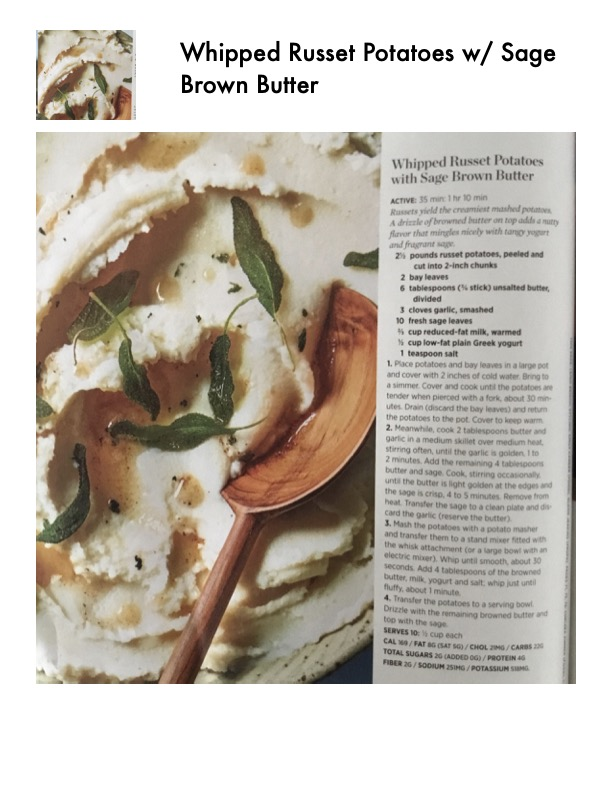

Whipped Russet Potatoes with Sage Brown Butter

Original cookbook page 38
Russets yield the creamiest mashed potatoes. A drizzle of browned butter on top adds a nutty flavor that mingles nicely with tangy yogurt and fragrant sage.
Prep: 35 minutes active • Cook: 35 minutes • Total: 1 hour 10 minutes
Ingredients
- 2½ pounds russet potatoes, peeled and cut into 2-inch chunks
- 2 bay leaves
- 6 tablespoons (¾ stick) unsalted butter, divided
- 3 cloves garlic, smashed
- 10 fresh sage leaves
- ½ cup reduced-fat milk, warmed
- ⅓ cup low-fat plain Greek yogurt
- 1 teaspoon salt
Instructions
- Place potatoes and bay leaves in a large pot and cover with 2 inches of cold water. Bring to a simmer. Cover and cook until the potatoes are tender when pierced with a fork, about 30 minutes. Drain (discard bay leaves) and return potatoes to pot. Cover to keep warm.
- Meanwhile, cook 2 tablespoons butter and garlic in a medium skillet over medium heat, stirring often, until garlic is golden, 1 to 2 minutes. Add remaining 4 tablespoons butter and sage. Cook, stirring occasionally, until butter is light golden at edges and sage is crisp, 4 to 5 minutes. Remove from heat. Transfer sage to clean plate and discard garlic.
- Mash potatoes with potato masher and transfer to stand mixer fitted with whisk attachment. Whip until smooth, about 30 seconds. Add 4 tablespoons of browned butter, milk, yogurt and salt; whip just until fluffy, about 1 minute.
- Transfer potatoes to serving bowl. Drizzle with remaining browned butter and top with crisp sage.
Recipe #38 from collection